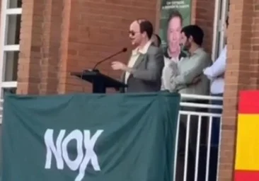

Torrente 6 — La campaña más sucia
Decisión oficial: sin trailer, sin póster, sin pases de prensa Santiago Segura y Amiguetes Entertainment tomaron la decisión inédita de no publicar ningún material promocional antes del estreno. Sin trailer, sin póster oficial, sin pases de prensa. El objetivo: preservar las sorpresas y los cameos para el día del estreno en cines. La imagen que ves a continuación es el único material que ha trascendido antes del estreno.

Esta es la única imagen oficial de Torrente Presidente (2026) que existe antes del estreno. Sin póster, sin trailer, sin fotos de rodaje.
José Luis Torrente da el paso más absurdo de su vida: se lanza a la política española. Con los mismos métodos, la misma ética y el mismo carisma que le han definido durante casi tres décadas, el ex inspector de Carabanchel decide que el país necesita un candidato como él.
Lo que sigue es una campaña electoral como nunca se ha visto: sin escrúpulos, sin programa político coherente y con una capacidad sobrenatural para convertir cualquier acto institucional en un desastre total. Torrente en la política española es exactamente tan peligroso como suena.
La sexta entrega de la saga, estrenada en marzo de 2026, recupera al personaje después de doce años y lo coloca en el escenario más actual posible: la campaña política española, con toda su caricatura, sus mentiras y sus contradicciones como telón de fondo.
Santiago Segura decidió no revelar el reparto completo antes del estreno para mantener el factor sorpresa de los cameos. El reparto completo se irá descubriendo en cines.
| Título original | Torrente, Presidente (Torrente 6) |
| Año | 2026 |
| País | España |
| Duración | 102 minutos |
| Género | Comedia · Sátira política |
| Director | Santiago Segura |
| Guion | Santiago Segura |
| Música | Roque Baños · Canción: Taburete |
| Fotografía | Javier Salmones |
| Productora | Amiguetes Entertainment · Bowfinger Int. |
| Distribuidora | Sony Pictures |
| Estreno | 13 de marzo de 2026 |
13 de marzo de 2026 — Estreno exclusivo en salas de cine de toda España. Torrente Presidente no estará disponible en plataformas de streaming en su fecha de estreno.